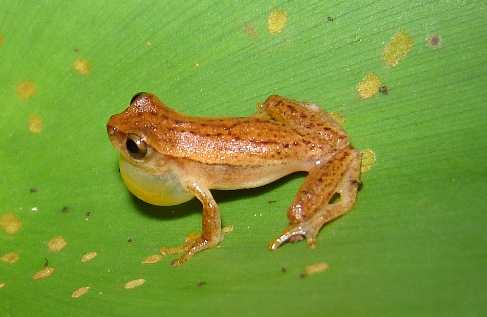

Possui corpo pequeno, amarelo com manchas lineares castanhas, e um ventre esbranquiçado. É uma espécie muito comum, que ocorre em áreas abertas sobre gramíneas e arbustos ao longo do Brasil, e da Bolívia até o Uruguai. Os machos podem ser encontrados vocalizando à noite, sobre vegetação baixa, a poucos centímetros acima da água.
As vocalizações são ouvidas praticamente ao longo de todos os meses do ano, com uma redução na atividade nos meses mais frios do inverno. Suas populações podem ser bem grandes, com um coro bastante ruidoso. Alimenta-se de diversos insetos, tais como mosquitos, besouros, e outros invertebrados.
